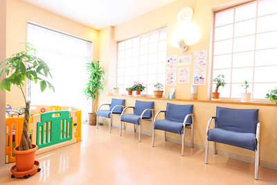

院長挨拶
初めまして。院長の磯部です。
板橋区常盤台の地に開業してから、今年で26年目になりました。近隣の患者さまを中心に、口腔内の問題から全身状態、ライフスタイルや仕事に至るまで、その方のパーソナリティや背景を考慮した、地域に根付いた良質な診療を心がけて日々精進しております。
当クリニックでは、患者さまに説明をし、納得していただかない限り、歯を削る・麻酔をする・歯を抜くなどの治療行為をいきなり行うことはありません。皆さまの貴重なお時間をいただいているからこそ、丁寧な説明、丁寧な治療を心がけております。
過去に痛い思いをして、「もうあんな痛い思いは二度としたくない」とお思いの方もいらっしゃるかと思います。当クリニックでは、そうした正当な理由がない限り、治療を引き伸ばすことはいたしません。
本当に治したいと思っている方、本気で予防していきたいと思われている方を、親身になって応援いたします。

院長略歴
- 1995年 日本大学松戸歯学部 卒業
- 1995年 一般開業医勤務（千葉県）
- 1998年 医療法人勤務 分院長就任（東京都）
- 2000年 磯部歯科クリニック 開院
板橋区歯科医師会 所属 ／ 板橋区立 弥生小学校 歯科校医
すべては患者さまのために
対応が優しいから安心
急患などの場合も、スタッフが素早く対応いたします。お母さんが治療中は、スタッフが小さなお子様のお相手をいたします。普段より治療費がかかる場合は、事前にご説明いたします。
説明が優しいから安心
丁寧でわかりやすい説明を心がけております。多くの選択肢の中から、メリット・デメリットをご説明します。説明なしに、いきなり麻酔をする・歯を削る・抜くなどは絶対にありません。
治療が優しいから安心
治療に伴う痛みを極力少なく、患者さまの負担にならない治療を心がけております。ご希望の方には笑気ガスを使用した無痛治療も。表面麻酔塗布後に注射を行い、痛みを軽減します。
個室診療でプライバシー保護
診察台がすべて個室になっておりますので、他の患者さまとは目線が合わず、プライバシーが守られます。小さなお子様の治療時は、付き添いの方が治療イスのそばで見ていられます。
衛生管理の徹底
デジタルレントゲンで被爆量が通常の1/10程度。使い捨てにできるものはできるだけ使い捨てを使用し、衛生面でも安心です。
治療の流れ
- 1
初診・ご予約
急患・新患は随時受け付けております。事前にご予約いただいた患者さまを優先して診療を行っています。突然のご来院の場合はお待ちいただくこともあります。お電話またはWebにてご予約をお勧めします。
- 2
問診表の記入
新患の方は受付に保険証を提示していただき、問診表に記入していただきます。高血圧・糖尿病・薬物アレルギー・肝臓病などがあれば記入してください。服用中のお薬がある場合は、お薬手帳をお持ちいただくか、お薬そのものをお持ちください。
- 3
応急処置
虫歯が痛い、冷たいものがしみるなどの症状を和らげます。継続的な治療をご希望の方は、必要に応じてレントゲン撮影やお口の全体的な検査を行います。
- 4
お口の状態についての説明
虫歯・歯周病・かみ合わせの異常などについて詳しくご説明します。その後、患者さまと一緒に治療方針について話し合います。インフォームド・コンセント（説明と同意）を重要と考え、了解なしに突然削ったり抜いたりはいたしません。
- 5
治療の完治
全体的な治療計画をもとに、治療を進めていきます。転勤・引越し・旅行などがある場合は事前にお伝えください。患者さまのライフスタイルを考慮しながら治療を進めてまいります。治療中にご不明な点があればいつでもお尋ねください。
- 6
メインテナンス
治療が終了した患者さまには、定期検診を強くお勧めしております。治療が終わったらそこから予防が始まります。患者さまのお口の状態・ライフスタイルを考慮して、1〜12ヶ月の範囲でベストな検診・メインテナンス期間をご提案します。
ご予約・お問い合わせ
お電話またはWebにてご予約をお受けしております。
まずはお気軽にご連絡ください。
月火水金 9:30〜13:00 / 14:00〜19:00 土曜 14:00〜17:30 ※木日祝 休診